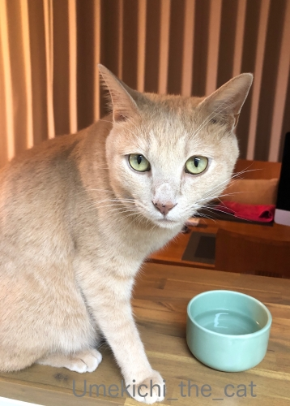
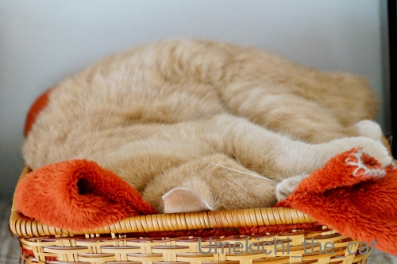
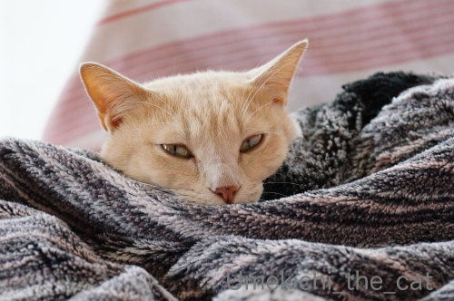
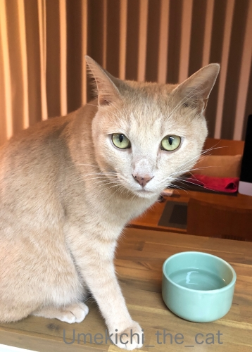
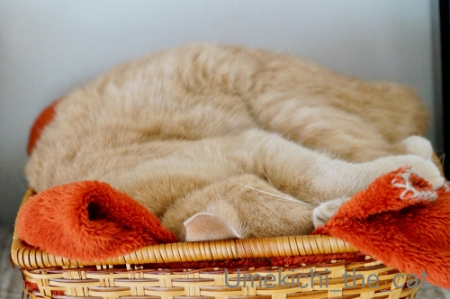
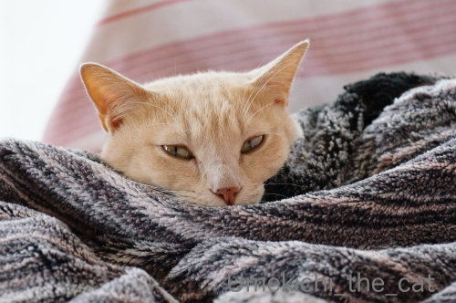

シッターさんに新技を披露する [梅吉]
札幌から帰ってきました。
半袖だと朝晩は羽織るものがないと肌寒く感じましたが
日中は思ったよりも暑くて湿度も高かったです。札幌はカラッと爽やかな土地のはずなのに。
北の大地の天候も変わってきているのかな。
皆様への所には今日から遊びに伺いますね＾＾
昨日少しだけ巡回してたのですが途中で力尽きて。。。
中途半端なご訪問になっちゃってごめんなさいm(_ _)m
さてさてお留守番の梅吉さんは・・・

1日目の夜にシッターさんから送られてきた写真の中から一枚。
冷蔵庫前で「ごはんはやくー！」の様子です。
シッターさんへの猫パンチと足ガブガブ＆タックルは健在だった模様（⌒-⌒;
最近丸くなったなぁ・・・と思ってたのでシッターさんへの接し方に何か変化があるかも
とちょっぴり思っていたのにw
それどころか話しかけると「カッ！！」っと威嚇の様な声を出すらしい (≧▽≦)
やだ、なにその新技！私も聞いてみたーーーーーーーーい0(≧▽≦)0

翌日の朝に送られてきた写真の中から一枚。ベランダから窓越しに撮ったものでしょう。
（シッターさんにはベランダの植物の水やりもお願いしてます）
この写真見たときにちょっと泣きそうになりました・・・
「おとーさんとおかーさん どこにいったん？」と不安そうな表情に見えて。
我が家の場合夫婦ともに実家が札幌でそれぞれの両親計３名は健在です。
親に何かあれば梅吉の留守番は必須。
留守番にはある程度慣れてもらわねばならないのですよ・・・
梅吉、がんばるんだ！
で、この写真を見た約8時間後には帰宅ー！

わーわー鳴きながら玄関で出迎えてくれました＾＾
その後ハイテンションで家の中を走り回り（喜びの表現と思われますw）
おかーさんに撫で回されてブルブル喉を鳴らしてご飯を食べてひと心地ついて
![[猫]](https://blog.ss-blog.jp/_images_e/101.gif) せや！わしを ひとりぼっちにしたやろ！！
せや！わしを ひとりぼっちにしたやろ！！
と思い出しお怒りモードになった？梅吉の表情ですw

直後、新聞の上＆傘の下というウハウハな場所ですぐにゴキゲン♪

カゴにぎゅうぎゅうに詰まって爆睡して

おかーさんにちゅうちゅう添い寝してもらって日常を取り戻した梅吉さんでした＾＾
 ↑ガブッと一押し↑
↑ガブッと一押し↑
帰省の日、朝6時過ぎに家を出ました。
早起きしてシッターさんの受け入れ態勢やら梅吉が快適に過ごせるかチェックしたり
ワタワタと用意して家を出たので空港到着時にはすでに疲れておりますw
気付の朝ビール！
明るい外と白い飛行機をバックに写真を撮るのって難しいんですねー。
（この下手くそ写真のみ私のあいぽん撮影。後の写真はおっとが高性能コンデジにて）
札幌市内は住宅地でもうっすら紅葉が始まってます。
ナナカマドです。
ランチはおっとの実家の皆さんと近くの回転寿司「トリトン」。
財力にとても余裕のある方はススキノあたりの高級回らない寿司屋をお勧めしますが
普通の財力の方には回転寿司を強力プッシュします！！
中途半端なお寿司屋さんに行くのだったら札幌の場合は回転寿司が絶対コスパ良しです。
一皿600円〜800円と回転寿司にしてはちょっとお高いものが狙い目ですよ。
上の写真はボタンエビ。甘くて美味しかったー！！
もちろんウニも。
おっとの実家の皆さんとサヨナラして今度は私の実家へ向かいます。
途中のスーパーのチェックも楽しい。
北海道はお魚が新鮮で安いなぁ・・・って改めて思いました。
安くはないけどキンキも普通に売ってます。八角と柳の舞なんていかにも北海道！って魚です。
夜は私の実家の人たちとジンギスカン。
じつはサッポロビール園に行こうと予約の電話をしたら満席ですって断られた！
夏休みも終わった平日月曜の夜なのに！！
すごい混んでるんですねー。団体様で占められてるんでしょうか。。。
で、札幌ファクトリーのビヤケラー札幌開拓使に行きました。
経営はサッポロビールなので使ってる食材は一緒ですよ。
お肉は生ラムメインです。ラムチョップも美味しかった！
ラムタン、初めて食べました。あっさりして牛タンより好きかも。
この店、外国人観光客らしき姿は見かけませんでした。
いたかもしれないけど個人客で静かに食す人たちかな？
サッポロビール園はおそらくアジア系団体客で賑やか過ぎると思われますw
こちらのお店の方が落ち着いて食べられて良いかもしれません。
（ビールの種類は断然ビール園なんですけど。ビール園のファイブスター生を飲んでみたかった。）
このお店のある札幌ファクトリーへは市内中心部から歩いて行けますよ。
札幌でジンギスカンをお考えの方は選択肢の一つにどうぞ＾＾
余談ですが私の一押しはツキサップじんぎすかんクラブです。
北の国から、みたいなロケーションの中で食事ができます。
生ラム肉訂正！ここのお肉はマトンでした。も美味しいですよ。
そしてこのお店はワインリストが充実です。
ジンギスカンと赤ワインって合うんですよー！！
興味のある方はHP見てみてね。
地下鉄東豊線福住駅からタクシー（1000円しないと思います）で行けます。
翌日、おっとは仕事（このために札幌に来た）
私は一足先に大阪に帰ります。梅吉が気になってしょうがないですからw
帰る前の一人ブランチはラーメンと迷いましたがお蕎麦に。
札駅中にある小さいお店なんですが日替わりで道内各地の蕎麦を出してます。
満足、満足！！
お寿司、ラム肉、お蕎麦（あるいはラーメン）。
大阪でも美味しいお店はあるけれどこの三つは北海道で食べる方が美味しいなと思うのであります。
帰省するとどうしてもこの三食になってしまうー！！！
半袖だと朝晩は羽織るものがないと肌寒く感じましたが
日中は思ったよりも暑くて湿度も高かったです。札幌はカラッと爽やかな土地のはずなのに。
北の大地の天候も変わってきているのかな。
皆様への所には今日から遊びに伺いますね＾＾
昨日少しだけ巡回してたのですが途中で力尽きて。。。
中途半端なご訪問になっちゃってごめんなさいm(_ _)m
さてさてお留守番の梅吉さんは・・・
1日目の夜にシッターさんから送られてきた写真の中から一枚。
冷蔵庫前で「ごはんはやくー！」の様子です。
シッターさんへの猫パンチと足ガブガブ＆タックルは健在だった模様（⌒-⌒;
最近丸くなったなぁ・・・と思ってたのでシッターさんへの接し方に何か変化があるかも
とちょっぴり思っていたのにw
それどころか話しかけると「カッ！！」っと威嚇の様な声を出すらしい (≧▽≦)
やだ、なにその新技！私も聞いてみたーーーーーーーーい0(≧▽≦)0
翌日の朝に送られてきた写真の中から一枚。ベランダから窓越しに撮ったものでしょう。
（シッターさんにはベランダの植物の水やりもお願いしてます）
この写真見たときにちょっと泣きそうになりました・・・
「おとーさんとおかーさん どこにいったん？」と不安そうな表情に見えて。
我が家の場合夫婦ともに実家が札幌でそれぞれの両親計３名は健在です。
親に何かあれば梅吉の留守番は必須。
留守番にはある程度慣れてもらわねばならないのですよ・・・
梅吉、がんばるんだ！
で、この写真を見た約8時間後には帰宅ー！

わーわー鳴きながら玄関で出迎えてくれました＾＾
その後ハイテンションで家の中を走り回り（喜びの表現と思われますw）
おかーさんに撫で回されてブルブル喉を鳴らしてご飯を食べてひと心地ついて
と思い出しお怒りモードになった？梅吉の表情ですw
直後、新聞の上＆傘の下というウハウハな場所ですぐにゴキゲン♪

カゴにぎゅうぎゅうに詰まって爆睡して

おかーさんにちゅうちゅう添い寝してもらって日常を取り戻した梅吉さんでした＾＾
帰省の日、朝6時過ぎに家を出ました。
早起きしてシッターさんの受け入れ態勢やら梅吉が快適に過ごせるかチェックしたり
ワタワタと用意して家を出たので空港到着時にはすでに疲れておりますw
気付の朝ビール！
明るい外と白い飛行機をバックに写真を撮るのって難しいんですねー。
（この下手くそ写真のみ私のあいぽん撮影。後の写真はおっとが高性能コンデジにて）
札幌市内は住宅地でもうっすら紅葉が始まってます。
ナナカマドです。
ランチはおっとの実家の皆さんと近くの回転寿司「トリトン」。
財力にとても余裕のある方はススキノあたりの高級回らない寿司屋をお勧めしますが
普通の財力の方には回転寿司を強力プッシュします！！
中途半端なお寿司屋さんに行くのだったら札幌の場合は回転寿司が絶対コスパ良しです。
一皿600円〜800円と回転寿司にしてはちょっとお高いものが狙い目ですよ。
上の写真はボタンエビ。甘くて美味しかったー！！
もちろんウニも。
おっとの実家の皆さんとサヨナラして今度は私の実家へ向かいます。
途中のスーパーのチェックも楽しい。
北海道はお魚が新鮮で安いなぁ・・・って改めて思いました。
安くはないけどキンキも普通に売ってます。八角と柳の舞なんていかにも北海道！って魚です。
夜は私の実家の人たちとジンギスカン。
じつはサッポロビール園に行こうと予約の電話をしたら満席ですって断られた！
夏休みも終わった平日月曜の夜なのに！！
すごい混んでるんですねー。団体様で占められてるんでしょうか。。。
で、札幌ファクトリーのビヤケラー札幌開拓使に行きました。
経営はサッポロビールなので使ってる食材は一緒ですよ。
お肉は生ラムメインです。ラムチョップも美味しかった！
ラムタン、初めて食べました。あっさりして牛タンより好きかも。
この店、外国人観光客らしき姿は見かけませんでした。
いたかもしれないけど個人客で静かに食す人たちかな？
サッポロビール園はおそらくアジア系団体客で賑やか過ぎると思われますw
こちらのお店の方が落ち着いて食べられて良いかもしれません。
（ビールの種類は断然ビール園なんですけど。ビール園のファイブスター生を飲んでみたかった。）
このお店のある札幌ファクトリーへは市内中心部から歩いて行けますよ。
札幌でジンギスカンをお考えの方は選択肢の一つにどうぞ＾＾
余談ですが私の一押しはツキサップじんぎすかんクラブです。
北の国から、みたいなロケーションの中で食事ができます。
そしてこのお店はワインリストが充実です。
ジンギスカンと赤ワインって合うんですよー！！
興味のある方はHP見てみてね。
地下鉄東豊線福住駅からタクシー（1000円しないと思います）で行けます。
翌日、おっとは仕事（このために札幌に来た）
私は一足先に大阪に帰ります。梅吉が気になってしょうがないですからw
帰る前の一人ブランチはラーメンと迷いましたがお蕎麦に。
札駅中にある小さいお店なんですが日替わりで道内各地の蕎麦を出してます。
満足、満足！！
お寿司、ラム肉、お蕎麦（あるいはラーメン）。
大阪でも美味しいお店はあるけれどこの三つは北海道で食べる方が美味しいなと思うのであります。
帰省するとどうしてもこの三食になってしまうー！！！

カフェオレ色の梅吉

梅吉 2023年8月10日 永眠


梅吉と出会った譲渡会

犬猫の理由なき殺処分ゼロ
妄想広告
UMEKICHI 光

爆発的に早い！
時々攻撃的！
Thanks to Mr.Boss365
爆発的に早い！
時々攻撃的！
Thanks to Mr.Boss365

窓越しの梅吉さんいつもと全然違う表情ですね。
でもおかーさんが戻ったらいつもの梅吉さんだわ。
札幌がお蕎麦も美味しいところとは知りませんでした。
by zombiekong (2019-08-29 00:14)
おかえりなさいませ。
梅吉さん、お留守番お疲れ様でした。がんばりましたね！
その寂しげななんともいえない表情！これはもうすぐにでも飛んで帰りたくなっちゃいますよねーー。
大阪は安くて美味しいお店が多い印象です。しかし、北海道と比べちゃ、そりゃ、負けますねーー。
zombiekongさんが、札幌がお蕎麦も美味しいとは知らなかったとおっしゃってますけど、それってもしかして、お蕎麦については、大阪にはなじみのない文化だから美味しいお店がないってことではー？って思いました。大阪ってあまりお蕎麦を食べない印象が。偏見かもですけど。
by ChatBleu (2019-08-29 06:27)
梅吉さん、お留守番お疲れ様よく頑張ったね。
by ニコニコファイト (2019-08-29 07:19)
お帰りなさいませー！
お寿司、ラム肉、お蕎麦、ラーメン、
どれもが美味いなんて最高です。
行きたいけど、札幌とかに出張の機会はないし、
自力で行くしかないなぁー(^｡^)
by よーちゃん (2019-08-29 07:22)
梅吉さん！留守番頑張りましたね♪
大喜びでお出迎えしてくれたのに
留守番の怒りがフツフツと（笑
愛おしくなりますね(#^.^#)
何かあったら留守番になる・・・
心が痛い・・・
Ｌｅａ・・まったく留守番させてません！
今年の目標２時間・・
もう夏が終わろうとしているのに
達成できる気がしません(;^_^A
by きぃ (2019-08-29 08:31)
札幌を堪能してきたのですね！
朝晩はもう寒かったのではないでしょうか？
梅吉さんお留守番我慢していたのですね(^^)
by ma2ma2 (2019-08-29 09:10)
梅吉さん寂しかったのでしょうね。
一人っ子でいつもおかーさんがそばにいるから、
お留守番の時はなおさら孤独感を味わっちゃうのかもですね。
それにしてもやはり北海道はおいしいものの宝庫ですね～
私は未だ美味しいジンギスカンを食べたことがありません。
銀座のビヤガーデンで美味しくないのは食べたことがありますが、
それ以来出会ってないので、今度北海道へ行った際には美味しいのをと思っています。北海道民のソウルフードなのでしょうね。
お魚も種類が豊富で安いですね。アニサキスがいないお魚」探求中ですｗ
by marimo (2019-08-29 09:21)
お帰りなさーい！
帰ってきて喜んでくれたらもう言うことないですよね(^_-)-☆
梅吉君留守番お疲れさまでした！
by palpal (2019-08-29 09:36)
お帰りなさーいo(〃＾▽＾〃)o
北の大地も蒸し暑くなってきましたか...
私の避暑地＝北海道が..."(/へ＼*)"))
梅ちゃんお留守番お疲れさまでしたーー！！
カっと威嚇の声ってーーーｗ 私も聞きたい(笑)
窓辺の梅ちゃんはいつもと違う表情ですね。
遠くを眺める何とも言えないお顔＾＾さみしいんだなぁ...
9月に北海道へ行きますが、札幌は通過するだけに
なっちゃいそうです。でもおいしいものはいっぱいあるので
楽しみっ❤函館の朝市とか(ΦωΦ)ふふふ
確実に太りますよね(￣┰￣;)ゞ
by カトリーヌ (2019-08-29 10:19)
こんにちは。
無事帰国？お帰りなさい！！
梅吉くんの「猫パンチと足ガブガブ＆タックル」は流石です！！
お目目が訴えている表情ですね。シャッターさんに対して・・・
「おまえ誰だ？猫母と猫父は・・・」みたいな表情？心配になりますね。
「お出迎え」は嬉しい行動。これから、梅吉くんに非日常的な経験は必要です。
回転寿司でも結構高いですね。十分高級な回転寿司です！！
「ウニ」も美味しそう！！色味が違う感じです。
本場のジンギスカンを食べた事ないですが「骨つきラム」は大好物。
希少部位のラムタンを食べましたか？羨ましい！？(=^･ｪ･^=)
by Boss365 (2019-08-29 12:02)
お帰りなさい(^o^)
梅吉さん、こっそり新技を練習してたんですねぇ(^^;)
大歓迎のお出迎え、嬉しいですねぇ(^^)/
うちは留守はかみさん妹に泊まりがけでお願いしてるので
私たちが帰ってきたときに喜んでお迎えするのは
かみさんのみです(>_<)→あれ？いつもと変わらず？
ボタンエビにウニにジンギスカン、食べたいものばかりです(^_^)
北の大地の味は濃厚で美味しいですよねぇ(^_-)
by ニッキー (2019-08-29 12:13)
お帰りなさ～い！
ガラス越しの梅吉さん見て私も泣きそうになっちゃいました^^;
頑張ってお留守番してくれたのですね。
シッターさんへの「カッ」は何なんだろう？？？
ウチのが鳥を見て「カカカッ」とやるのと同じだったら、獲物だと思ってますね。シッターさんお気をつけて～(≧▽≦)
ウチのも周囲に猫はおらず一緒にいるのは下僕だけなせいか、あまり猫らしいにゃ～という鳴き声ではなく変な声をいっぱい出します^^
ウチも相方が函館だから・・と思いつつ、どっちか一人留守なだけでもウロウロ落ち着かないわがビビリ息子を見ていると、なかなか家を空けられません。
お魚とラーメンは絶対北海道が美味しいです。あとトウモロコシも(#^^#)
by ゆきち (2019-08-29 12:20)
月寒ジンギスカンクラブ、羊ヶ丘展望台の近くかな？(^^) 昔 月寒に5年位住んでいました 懐かしいな〜
by チャー (2019-08-29 14:49)
ちぃさん、お帰りなさい。
ガラス越しの梅吉さん、心なしか不安げですね。
おかーちゃ〜んと呼んでいそうです。
一人で帰宅されたのですね（笑）
気が急くのも分かります。
梅吉さん大喜びですね。
梅こちさんのご機嫌が治るウハウハな場所は
おかーさんとしては確認済みなのですね（笑）
梅吉さんに花柄の傘が似合ってます。
新聞紙の上というのがお茶目で可愛いです。
北海道の食べ物は大きくて、それで美味しくて食べ応えがありますね。
ホタテなど関西では小さくて、
買う気がおこりません（笑）
by kiki (2019-08-29 16:15)
北海道はもう紅葉が始まっているんですね。うちにもナナカマドがありますがまだ青々としています。魚介もさすが本場で圧倒されますね。どれも美味しそうです！
梅吉さん、帰りを待ちわびていたんでしょうね。嬉しそうな様子が目に浮かびます(^_^)
by kou (2019-08-29 17:01)
お帰りなさい。
梅吉さんの喜び方がマックスですね。
若い頃、札幌の友達の家に遊びに行った時にジンギスカンを自宅で食べさせてもらいました。
美味しかった＾＾
by riverwalk (2019-08-29 21:04)
お帰りなさいませ～(^^♪
梅吉くん頑張りましたね。
ホッとしたあとのお怒りモード・・・
逆にどこほっつき歩いてたのよと親目線かも(笑)
そうそう北海道ってカニのイメージ強いですがエビも美味しいんですよね！
札幌で食べたブドウエビの味が忘れられません。
by yamatonosuke (2019-08-30 01:21)
ご無事でなにより＾＾
梅吉さん、頑張りましたねぇ。
放置したので怒られるのは当然です（爆）
by ぽちの輔 (2019-08-30 06:35)
おかえりなさーい。梅吉さんもご苦労さま。
最後のふうっ…て顔がよいですね。
お寿司～～、うに～～、ジンギスカン～～、いいですねえ。
札幌ファクトリー、道マラのあとに行ったことがありますが
疲れすぎてあまり食べられず…。
次回は万全の状態で行きたいものです。
by liang (2019-08-30 09:08)
梅吉さん、お留守番お疲れ様でした。
いっぱい愛情をもらってください。^^)
柳の舞なんて名前のお魚がいるのですね。知りませんでした。
ジンギスカン、袋入りのそのまま焼くだけのジンギスカンが大好物ですが、本場のジンギスカンはまだ食べたことありません。一度食べてみたいです。
by yes_hama (2019-08-30 22:01)
一枚目の写真は、上から目線だニャ（ﾟ□ﾟ）
私も札幌に行きたいです。
その目的は市電巡りと本場の狸小路に行ってみたいw
by 英ちゃん (2019-08-31 00:35)
シッターさんに「カッ!!」って威嚇しながらも、ゴハンはおねだり(^.^)
なんだかんだで、ゴハンで手懐く、可愛いやっちゃで〜♡
お留守番おわって、めっちゃ可愛がってもらいや〜(^^)v
by のらん (2019-08-31 11:29)
梅吉君寂しかったんですね
札幌に連れては動けないだろうし
確かにお留守番には慣れておいてほしいですね
by 藤並 香衣 (2019-08-31 23:28)
窓越しの梅吉くんの顔、これは切なくなりますよー
おかーちゃんがちゃんと帰ってきたら
興奮MAXも可愛いな♪
札幌帰省お疲れ様でした。そっか、湿気も多くなってきたんだね。
やっぱり気候も変わってきてるって思うよね。
トリトンはうちの実家からも歩いてでも行けるトリトンだろうかｗｗ
北海道の回転寿司は絶対美味しい！
東京では回転寿司入らないけど、札幌なら入るよ(笑)
ビヤケラー札幌開拓使はビールだけ飲みに入ったことあるわ。今度はちゃんと食べてみようっと♪
by リュカ (2019-09-04 11:54)